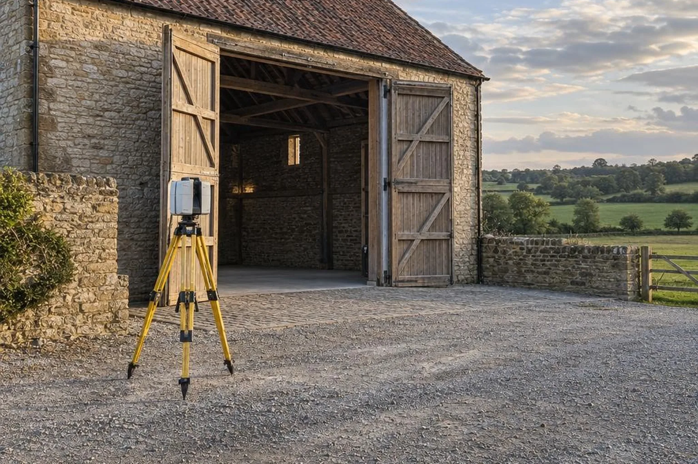

Road & sub-base level surveys
Sub-base and binder checked against the road design before the next layer goes on.
Barn conversion and listed building surveys
Nothing in an old barn is square, level or plumb. We laser scan the whole building and draw it as it stands: leaning walls, sagging ridge, twisted timbers and all, so the conversion is designed around the real thing.

In short: we produce existing plans, elevations and sections of barns, agricultural buildings and listed or historic buildings from a full laser scan. The drawings show true wall thicknesses, leans, roof lines and exposed timbers, for Class Q and full planning applications, listed building consent, structural assessment and conversion design. Plans and elevations from £995.
A conversion has to fit inside what's already there. If the drawings assume walls are straight and plumb, the new windows, floors, insulation and stairs are designed for a building that doesn't exist, and the difference turns up as extra cost on site. The thicker and older the walls, the bigger the gap between the tidy drawing and the real barn.
It matters for planning too. Councils look hard at whether a barn can be converted without effectively rebuilding it. Drawings that show the building honestly, backed by a full scan, give your architect and structural engineer a sound basis for that case.
For a listed building, the scan is a non-contact record of the building before work starts. Nothing is fixed to the fabric and nothing is marked. The drawings support the heritage statement and the listed building consent application, and the point cloud stays on file as a record of how the building was, which is worth having before alterations, repairs or a change of owner.
Where a heritage body or conservation officer asks for drawings to a particular standard, send us the brief and we'll confirm what we can provide against it before we quote.
Our home area is full of limestone and ironstone barns, from Rutland villages to the Welland valley and north Northamptonshire. They're exactly the buildings where a scan earns its keep: thick rubble walls, irregular openings and roofs that have moved over a couple of centuries.
We measure and draw the building. We don't assess the structure, prepare planning applications or advise on heritage significance; your architect, structural engineer and planning consultant do that, and we work to their brief. For ordinary homes and extensions, see measured building surveys; for the land around the building, topographical surveys.
See the barn and listed building survey cost guide for prices.
Sub-base and binder checked against the road design before the next layer goes on.
Before-and-after scans that map the thickness actually laid, across the whole road.
Slab flatness, brickwork to drawing and drain collar positions, checked plot by plot.
Finished roads, kerbs, drainage covers and plots recorded, with as-built drawings in DWG and PDF.
Slabs and screeds scanned edge to edge and checked against SR1-SR3 or your flatness class.
Millimetre-accurate floor plans and elevations for kitchens, extensions and architects.
Levels, contours, boundaries, buildings and trees for planning and design, with the full 3D scan.
Groundworks and civils drawings reviewed before you dig, on any project: problems found on paper.
Levels, walls, steps, trees and drains surveyed for garden designers, landscapers and homeowners.
Aerial mapping tied to RTK GNSS control: scaled orthophotos, levels and contours for whole sites.
Every heap of stone, topsoil and spoil measured by drone, in cubic metres and tonnes.
Cut and fill against design or a previous survey, topsoil strip depths and muck-shift checks.
Monthly drone records of the whole site, compared with last month, for valuations and reports.
Site control on Ordnance Survey grid, and pegs for earthworks, drainage, roads and plots.
Drainage, chambers and ducts recorded in the open trench, with levels and photos, before backfill.
Roads, kerbs, walls and neighbouring buildings recorded by scan, drone and photo before work starts.
Close-up roof inspections without scaffold, with measured roof areas and pitches if needed.
Already have a scan or your engineer's levels? We process your data and report against design, no visit needed.
Registered laser scan data in E57, RCP or LAS for architects and engineers who draw their own.
Every floor in a house mapped as levels and contours, for engineers, subsidence and sloping floors.
Leaning and bulging walls mapped against vertical, with repeat surveys to monitor movement.
Vaults, cellars and voids exposed during works, measured from the opening without disturbing them.
Scaled lease plans to HM Land Registry requirements, with GIA or NIA floor areas.
Section 38 pre-adoption checks of falls, ponding, kerbs and ironwork before the council inspects.
Riding arenas, manèges and pitches: high and low spots, falls and surface depth.
Every wall, angle and slope measured for kitchen designers, stair makers and joiners.
Existing plans, elevations, roof sections and levels for extensions and loft conversions.
Send us your point cloud and we draw plans, elevations, sections or a topo. No site visit.
Old barns are rarely square, level or plumb. Walls are thick and lean, roofs sag, timbers twist, and there are few straight lines to measure between. A tape-and-laser-measure survey ends up simplifying all of that. A laser scan measures the building as it actually is, so the drawings show the real wall thickness, the lean and the roof line.
To apply for prior approval you need existing and proposed drawings that show the building and what you plan to do with it, and the council will look closely at whether the existing structure can take the conversion. Accurate existing drawings make the proposal credible and give your architect and structural engineer something reliable to design from. Your planning consultant or architect will confirm exactly what your application needs.
Yes. The scan is non-contact, so nothing is fixed to the fabric. Plans, elevations and sections show the building as it is, which is what a heritage statement and listed building consent application need, and the point cloud is a permanent record of the building before any work starts.
Where they're visible, yes. Inside a barn the trusses, purlins and rafters are usually exposed, so they can be shown in section. Anything hidden behind boarding or lining can't be scanned until it's opened up.
Yes. We cover the Midlands as standard and travel further for larger jobs; travel is added outside 50 miles of Corby.
Send the drawing, the location and when you need it. We reply the same working day with a fixed price.